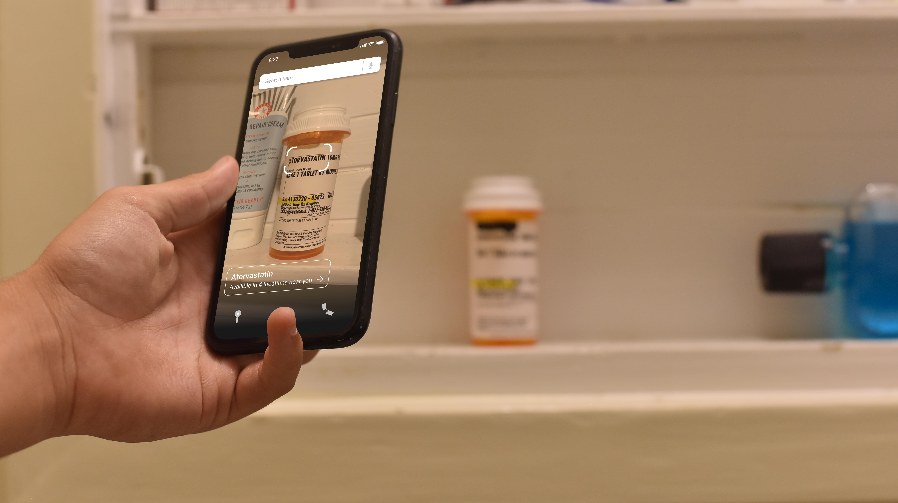
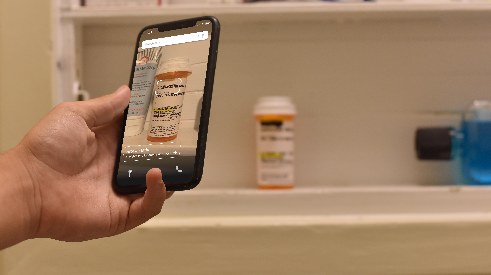

Access to pharmaceutical products in sub-saharan africa is a major deciding factor in health and quality
of life in a particular region. Oftentimes pharmacies may be poorly stocked to handle the needs of the
community it serves, but even when that need is met, pharmacies can still be difficult to access as a
result of cultural, economic, or infrastructural challenges. Working with a group of 3 other students in
the Brown Computer Science Department, we have developed Lahiya: a mobile app designed to streamline the
process of purchasing pharmaceutical products in Niger.
If you wake up with a splitting headache in the middle of the night in Niger’s capital city, you will
find it oddly challenging to find a pharmacy to buy your desperately needed bottle of Advil. This is
because Niger employs a confusing rotating schedule to determine which pharmacies will be open 24 hours
on any given night. A pharmacy that was open last night will probably not be open the next. The
mysterious schedule is not readily available to the public, leading to frustration, a reluctance to seek
out medication when needed, and ultimately a lower quality of healthcare in the country.
We set out to design an app that not only addresses this issue of unpredictable hours, but goes a step
further by making the entire process of acquiring medication in a country with 11 official languages,
low literacy, and immense cultural diversity, more intuitive.
Solution
In our current version of the app, the interface is centered around a simple map. Users can select any
pharmacy in Niger and view their hours, what medication they have in stock, and find the fastest route
from their location. We aimed to find the proper balance of landmarks to include, limiting the clutter
that can sometimes overwhelm a user on a map application. The map displays only the elements absolutely
relevant to finding pharmacies: streets, distinctive landmarks, the user’s current location and the
pharmacies themselves.
For users who may have trouble reading the title of a particular product or perscription or would just
like to search for medication more efficiently, we have included an option to scan the product with the
phone camera and find pharmacies nearby with the product in stock.
We have also included a third tab in which users can search for medication by ailment. This employs
iconography very directly, in an effort to provide an entirely visual user flow.
This application is still under development, and user studies have been limited to zoom calls as grants
from Brown allowing our team to travel to Niger and conduct more thorough studies were cancelled due to
COVID-19.


 
